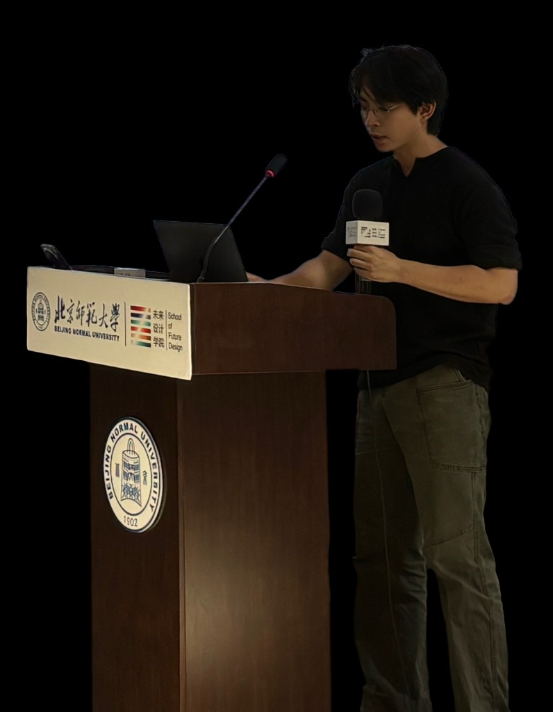

艺术创作者 · 观察者 · 思考者 · 实验主义者 · 旅人

"学习，思考，探索与尝试，仍在深水里"
罗梓茗是一位新媒体艺术创作者，工作于装置、游戏与影像之间。他对技术感到好奇，持续探索技术的可能边界，试图通过制造奇怪的设备去提问——那些介于艺术品与伪功能物之间的奇妙产物，不过于强调解决问题，只是让某种隐藏的关系变得可感受。
目前攻读艺术与科技方向研究生，正式步入以思辨设计与批判性技术实践为方法的研究型创作，一边创作，一边思考，寻找自己的艺术语言。
Tzeming Law is a new media artist working with installations, games and video. Fascinated by technology, he explores its boundaries and builds unconventional devices to provoke reflection. His works exist between artworks and pseudo-functional objects, revealing hidden relationships instead of solving practical problems.
Currently a Master's candidate in Art and Technology, he practices research-led creation grounded in speculative design and critical technical practice. He forges his unique artistic voice through constant creation and thinking.